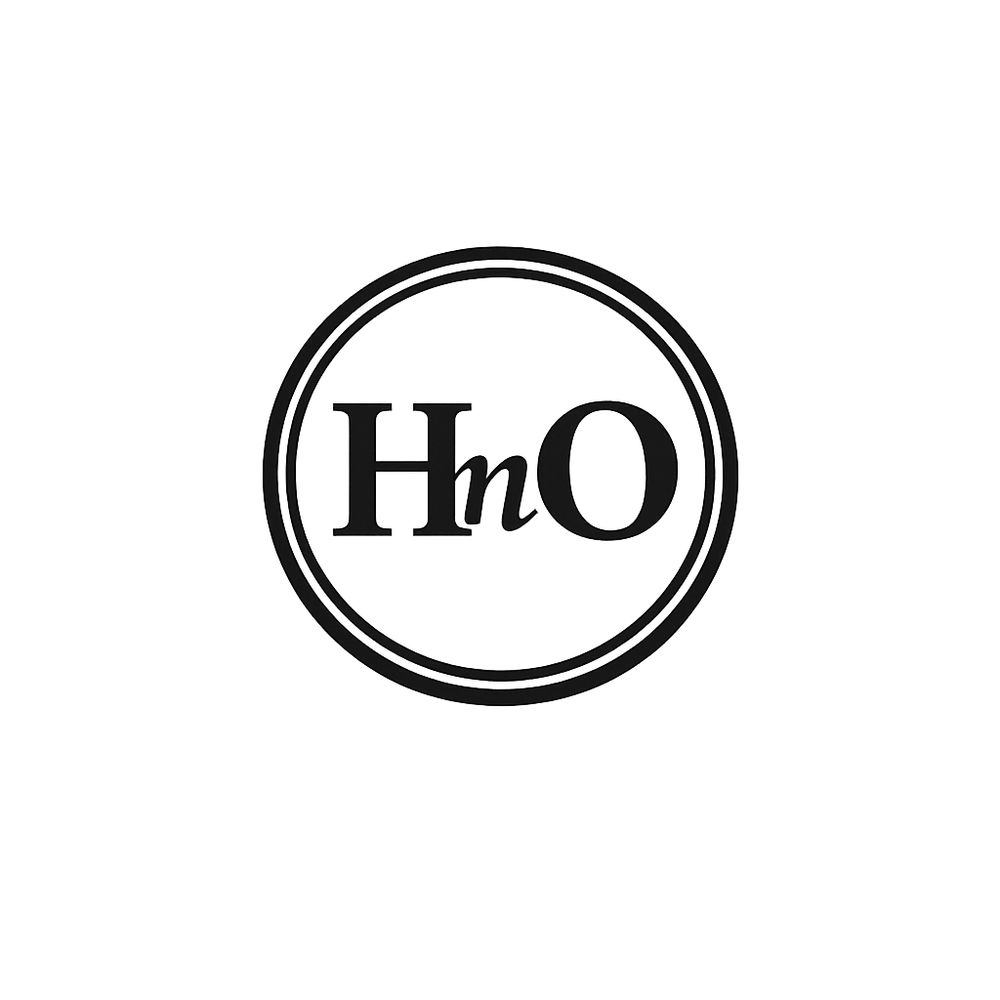

For generations, African knowledge lived in fragments — scattered across memory, ritual, land, lineage, and silence. Some pieces were erased. Others were misinterpreted. Many survived only because elders carried them in their bodies, in their breath, in their rhythm. I was raised inside that continuum. I grew as a living library of my people’s cosmology, history, and ancestral logic.
Today, for the first time, all of my work stands together under one sovereign roof — protected, restored, and dignified. This platform is not a website. It is a living archive, a custodial declaration, and a sovereign editorial identity. It is the digital home of my lifelong work as Henry Nickson Ogwal — known in my sovereign identity as HnO.
Here, African knowledge is honoured. Erased narratives rise again. Memory breathes freely. My voice — once interrupted — now speaks with full agency.
This archive does not seek validation from Eurocentric institutions. African knowledge is complete in itself. It does not require translation into foreign frameworks to be legitimate. The work here is grounded in specific communities, lineages, and custodial traditions whose names are honoured where consent is given, and protected where silence is required.
This sovereign archive is organised into four Quadrants, each representing a pillar of my lifelong work:
Q1 — Indigenous Sciences and Oral Literature: The cosmologies, metaphors, rhythms, and unified sciences of my people.
Q2 — Ancestral and Heritage Records: Lineage, custodial memory, provenance, and the restoration of erased histories.
Q3 — Consulting and Advisory Portfolios: Strategy, governance, regulatory documentation, and continental development work.
Q4 — Ethnographic Audio and Master Recordings: Phonographic compositions, cultural soundscapes, and the living archive of African audio heritage.
Supporting these Quadrants are sovereign channels for: Partners and Collaborators; Governance and Custodial Protocols; Teaching and Learning; Sovereign Support and Accessibility; and News and Announcements.
Together, the quadrants and the channels form a unified architecture — a complete ecosystem of African knowledge, restored and protected.
This is a cultural sanctuary. A teaching ground. A research platform. A home for accountable, reparative scholarship. A place where African intellectual authority stands without compromise.
It is also the place where I — HnO — finally speak with the fullness my story deserves. Not as a distant researcher, but as a living witness, custodian, and representative voice of my people’s memory.
Every page carries the breath of those who came before — the ancestors first, then the elders, the custodians, and the storytellers whose wisdom shaped my path. Every page carries the rhythm of the African drum. Knowledge is not merely written. It is lived, remembered, and carried.
Some knowledge will never be digitised or made public. Sacred, restricted, or community‑bound materials remain under custodial protection. This archive does not grant license for extraction, appropriation, or commodification of cultural knowledge. Researchers, institutions, and readers are expected to honour the boundaries set by custodians and communities.
This work is not neutral. It challenges colonial narratives, institutional habits, and personal assumptions. Readers are invited to approach this archive with humility, to recognise their own inherited biases, and to accept discomfort as part of learning. The materials here are not to be detached from their custodial context or repurposed without consent.
You are not a visitor here. You are a global citizen with a cosmological background — a bearer of memory, a carrier of rhythm, a participant in the great human continuum. Your presence here is part of the restoration.
This platform invites you to:
(1) Learn what was hidden from you;
(2) Unlearn what was distorted yet shapes your daily life;
(3) Relearn what was unfairly tarnished as unworthy or wrong;
(4) Empty yourself of colonial baggage — stereotypes, codes, allegories;
(5) Engage with the work as a student, supporter, partner, or collaborator;
(6) Contribute to the restoration of African knowledge;
(7) Share feedback that strengthens custodial clarity;
(8) Participate in a living archive that grows through community.
Engagement with this archive is a covenant, not a transaction. African communities, diaspora, and allies are welcome here under principles of respect, reciprocity, and accountability. Institutions and researchers are expected to approach this work with humility, disclose their intentions, and avoid extractive practices. Every reader is invited to become a responsible participant in the restoration of African knowledge.
Readability and Elders’ Access: This archive is designed for elders and readers across generations. Text is structured for clarity, calm pacing, and visual comfort. Layouts avoid clutter. Contrast, font size, and spacing follow accessibility principles so that elders, low‑vision readers, and those new to digital spaces can engage with dignity and ease.
Low‑Bandwidth and Rural Connectivity: The site is engineered to function on weak internet connections, rural networks, and limited devices. Pages are lightweight, media is carefully optimised, and core content remains accessible even under constrained bandwidth. This is a deliberate choice to honour readers in villages, small towns, and low‑infrastructure environments.
Privacy and Custodial Protection: Readers, contributors, and communities are protected by a privacy‑conscious design. Personal data is minimised. Sensitive information is handled with care. Community identities are disclosed only with consent, and some custodial details are intentionally withheld to protect people, places, and practices from harm.
Cyber Security and Digital Safety: The architecture of this archive is configured to safeguard voices, agencies, and artifacts. Security measures protect against tampering, unauthorised access, and malicious interference. The integrity of published work is monitored, and custodial materials are guarded against digital exploitation.
Story — African stories that refused to die.
Memory — African history restored across time.
Sovereignty — Legitimacy of African Knowledge, Voice, and Agency.
Welcome to the sovereign home of my work.
Welcome to the archive that refused to die.
Welcome to a place where we learn together, remember together, and restore together.